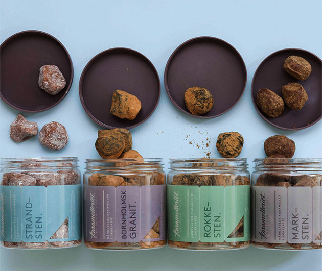
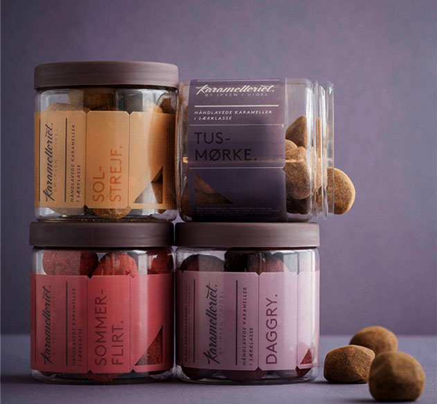
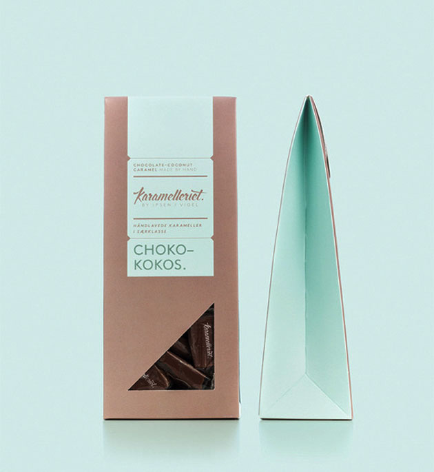
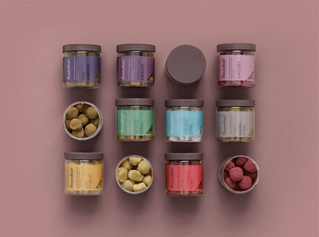

Trade Professionals:
Please contact us for a full listing of our Grand Cru Collection. Visit Tea Store
GRAND CRU COLLECTION
Grand Cru represents a collection of terroir teas that possess distinctive elegance and unique characteristics; showcasing the exclusivity of each region with the humble beverage as a priceless gift from Mother Nature to us.
Sourced from the best tea plantations across China, India, Japan and Sri Lanka, the Grand Cru collection strives to deliver the freshest tea leaves from harvest to cup. The collection represents the epitome of tea drinking, encompassed in the complexity of every sip.
black Tea
- Darjeeling Margaret’s Hope
- TGFOP 2nd Flush (India)
- Assam Hazelbank TGFOP1
- 2nd Flush (India)
Oolong Tea
- Iron Buddha Superier (China)
- Dan Cong Magnolia (China)
white tea
- Silver Needle (China)
- Royal Peony (China)
Green Tea
- Lion’s Peak Dragonwell (China)
- Gyokuro Pearl Dew (Japan)
Please contact us for a full listing of our Grand Cru Collection. Visit Tea Store

Trade Professionals:
Please contact us for more information about our Artisan Selection. Visit Tea Store
ARTISAN SELECTION
Soothe the palate and revitalize your spirit with The Gryphon Tea Artisan Selection. Our master tea blenders have lovingly hand-picked the world’s finest leaf teas and herbs to inspire an exquisite tea drinking experience for you. Each experience is wrapped in a silken sachet which delivers a pure and full flavored brew; a promise on our part for you to enjoy the beauty of tea drinking at its finest.
The Artisan Selection is a range of fun and experimental teas that draws from the essence of asian-inspired exotic ingredients. The creations have won accolades from international bodies such as the Great Taste Award (UK) and the Monde Selection (Belgium).
black Tea
- British Breakfast Tea
- Contessa Grey
- Earl Grey Lavender
- Straits Chai
White Tea
- Nymph of the Nile
- White Gingerlily
Green Tea
- Hanami
- Pearl of the Orient
- Marrakesh Mint
- Osmanthus Sencha
Herbs
- Chamomile Dream
- Lemon Ginger Mint
Please contact us for more information about our Artisan Selection. Visit Tea Store

Trade Professionals:
Please contact us for a full listing of over 100 teas. Visit Tea Store
GOURMET SELECTION
The Gourmet Selection is the flagship range for the foodservice industry with a diverse array of premium bulk teas to suit every taste bud. It aims to continually evolve both in flavour and ingredients to cater to the ever-changing palates of consumers.
black Tea
- Earl Grey Classic
- Chocolate Truffle Mint
- French Vanilla
- Mexican Mango
- Tiramisu
White Tea
- Gold Muscato
- Cherry Blossom
- Seabreeze
- Jade Needle
- Pomergrante Ruby
Oolong Tea
- Osmanthus Oolong
- Four Seasons Oolong
- Orchid Oolong
- Vintage Red Robe 1998
- Ginseng Oolong
Green Tea
- Yuzu Kukicha
- Sakura
- French Vanilla Sencha
- Genmaicha
- Yuzu Pear Blossom
Caffeine-Free
- Bael & Pandan
- Strawberry Cream
- Peach Nectar
- African Sunset
- Swiss Berry Herbs
Herb
- Pink Rose Buds
- Lemon Myrtle
- Roman Chamomile
- Peppermint
- Mulberry
Please contact us for a full listing of over 100 teas. Visit Tea Store

Trade Professionals:
Please contact us for a full listing of our Specialty Application teas. Visit Tea Store
SPECIALTY APPLICATION
Gryphon’s Speciality Application range strives to provide innovative solutions to cater to the needs of the new generation of consumers. From iced teas to matcha powders, Gryphon continues to deliver products using the highest quality tea leaves to bring out the exceptional flavour in every cup.
Matcha Powder
- Matcha Powder
- Matcha Premix (Sweetened)
- Organic Matcha
Iced Tea
- Forest Berry
- Summer Peach
- Southern Comfort
Latte
- Honey Ginger Chai Latte
- Earl Grey Latte
- Marsala Chai Latte
Please contact us for a full listing of our Specialty Application teas. Visit Tea Store